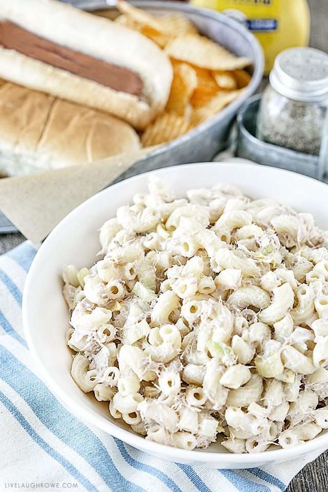

Lemon Tuna Pasta Salad

Lemon Tuna Pasta Salad
A classic tuna pasta salad with a twist!
Prep Time:
30 mins
Cook Time:
15 mins
Servings:
6
Ingredients
- 8oz elbow macaroni
- 1 5oz can tuna
- 1 tsp coarse kosher salt
- 1 tbsp coarse kosher salt (yes, we
need 2 different portions)
- Juice of 1/2 lemon
- 1/2 tbsp olive oil
- 1/4 cup mayonnaise
Utensils
- 2.5 Qt sauce pan
- Strainer
- 8.5-cup food storage container
- Fork
- Can opener
Steps
- Add water to the sauce pan until 75% full. Then, add
1 tbs of salt and 1 tbs of olive oil. Bring water to a boil.
- Once water starts to boil, pour in the pasta, turn the heat
down to medium and cook for 15 mins.
- Turn off the heat and strain the pasta. Follow with a
shower of cold water to stop the cooking process.
- Pour the pasta in the storage food container.
- Open the can of tuna and drain it. Add the tuna to the
pasta one forkful at a time and mix well after each
portion.
- Sprinkle 1 tsp of salt over the mixture, followed by the
mayonnaise. Then, mix with the fork.
- Close the lid of the container and shake until everything
is well combined.
- Open the container once more and add the lemon juice. Close, then
it shake it again.
- Refrigerate until ready to serve. Serve cold.